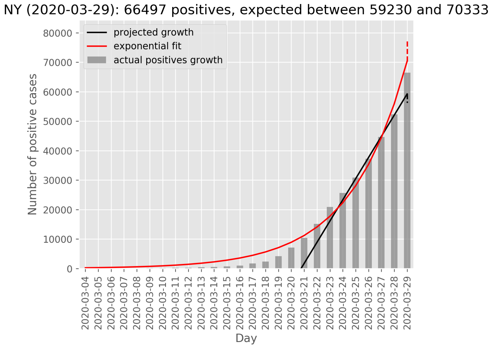

Forecast Expected Positive
Based on your code , we can forecast a hi/low range of expected positive values.
Now we need to tie it into the test logic.
We need to get the current value out of the row argument and use the history to forecast. Right now, the logic uses the first value of the history as the current value.
Erin-Boehmer added the label Data quality on March 30, 2020 at 9:22 am
Erin-Boehmer commented on March 30, 2020 at 12:42 pm
Done - now expected positives forecast runs for worksheet and current (latest as determined by lastUpdateEt field) against the history_df (aka daily API pull, with any row matching current.lastUpdateEt == history_df.date removed).
I also added a visual for fuzzy acceptance range in the plots

Erin-Boehmer closed the issue on March 30, 2020 at 12:42 pm
Once you have it tied in, add it to the current checks.